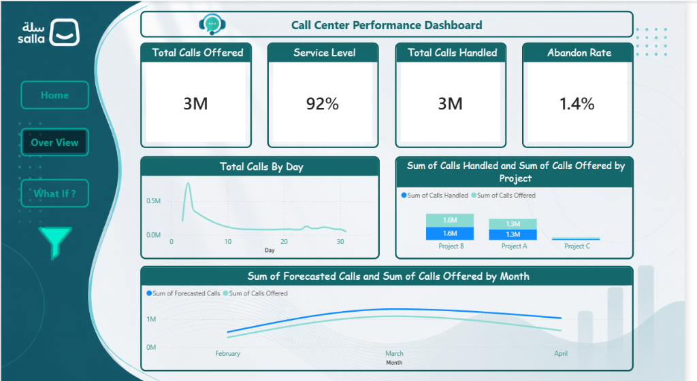
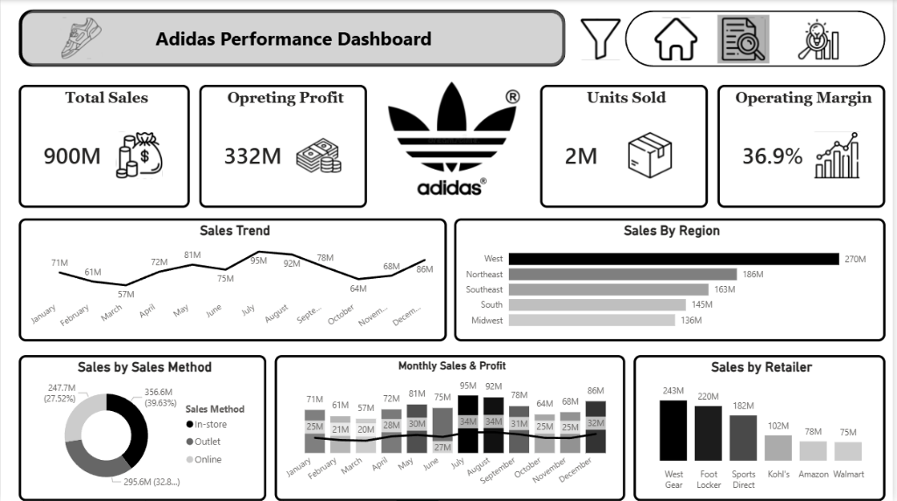
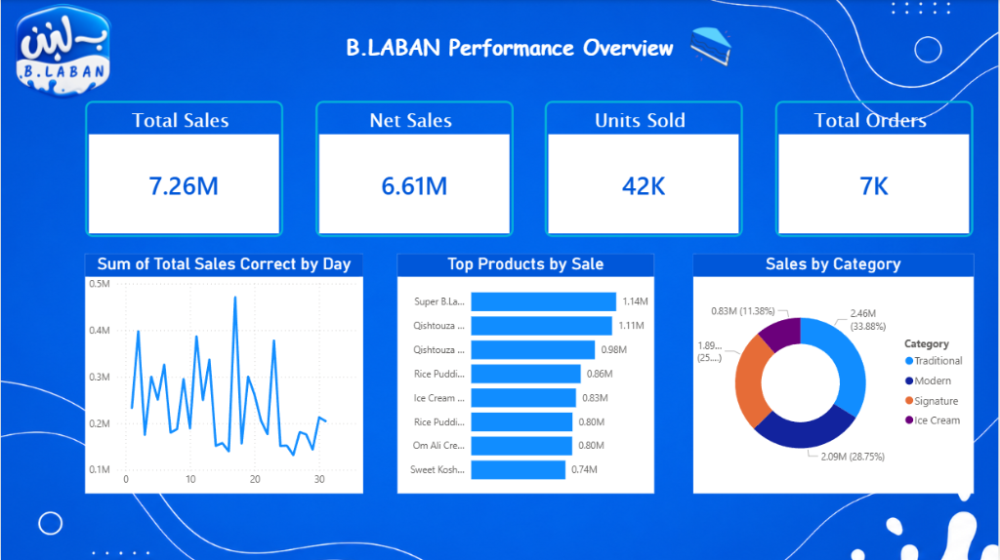
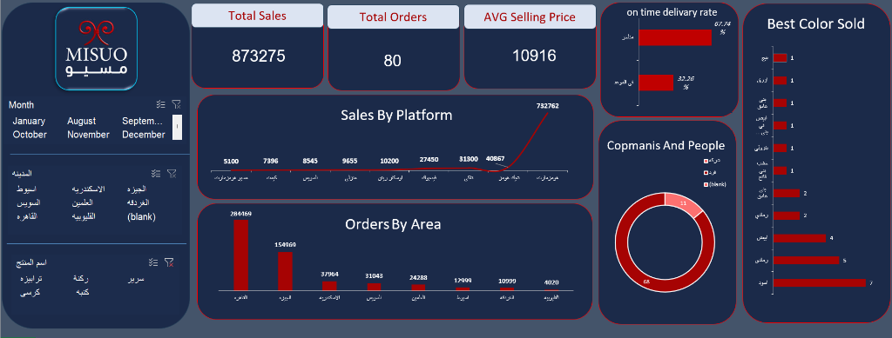

I transform raw data into clear insights, interactive dashboards, and actionable business recommendations that help organizations understand performance and make better decisions.
Bridging technical data computation with manager-level decision making.
I am a Junior Data Analyst and Computer Science student at Fayoum University with a strong interest in turning data into meaningful business insights. I enjoy exploring datasets, identifying patterns, analyzing KPIs, and building interactive dashboards that make complex information easier to understand.
My approach combines technical data skills with business-oriented thinking, allowing me to look beyond the numbers and focus on what the data means for decision-making. I am continuously developing my analytical, technical, and business skills through practical projects and real-world datasets, with a particular interest in Marketing Analytics, E-commerce Analytics, Sales Analysis, and Business Intelligence.
A disciplined end-to-end data lifecycle from raw extraction to actionable recommendations
Categorized competencies developed through structured diplomas, coursework, and hands-on projects.
Core software suite & top strength stack
Real-world dataset projects showcasing end-to-end data cleaning, KPI modeling, and business recommendations.

An interactive Power BI dashboard designed to analyze call center performance, monitor operational KPIs, and identify call volume patterns.

A sales analytics dashboard created to evaluate Adidas sales performance, identify changes in sales trends, and extract actionable business insights.

A sales and marketing dashboard focused on understanding product demand, sales performance, and customer purchasing patterns.

An Excel-based e-commerce analysis designed to identify top-performing cities, customer preferences, and best-selling products.
Structured academic foundations, specialized diplomas, and rigorous project experience.
Developed practical data analysis skills through structured training and hands-on projects covering the complete data analysis workflow.
Strengthened technical and analytical capabilities through structured professional training focused on enterprise data analysis, visualization tools, and business application.
Built end-to-end analytical dashboards and business case studies across diverse industries (Retail, Call Center, Food & Beverage, E-commerce).
Third-year Computer Science undergraduate mastering algorithmic problem solving, relational database concepts, statistics, and programming fundamentals.
Delivering measurable value across the entire analytical pipeline.
Analyze datasets to identify trends, patterns, performance issues, and actionable insights that empower smarter business operations.
Build clear and interactive dashboards using Power BI and Excel to monitor KPIs, explore variables, and support decision-making.
Clean, transform, validate, and prepare raw datasets with Power Query, Python, and SQL for accurate, reliable, and standardized analysis.
Translate analytical findings into understandable insights and practical business recommendations that management can act upon immediately.
Have a dataset, dashboard idea, or analytical challenge? Feel free to get in touch.
Whether you are an organization seeking a data analyst intern, a business looking for actionable dashboard reports, or an analytics peer looking to collaborate, I welcome new conversations.